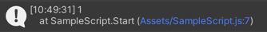
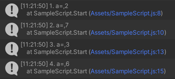
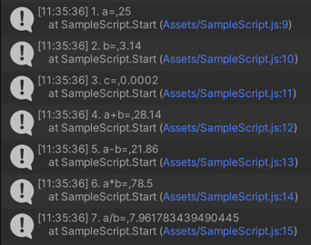
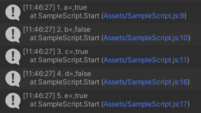

변수는 이름을 가지고 있어야 합니다. 변수의 이름은 프로그래머가 정의하며, 식별자(identifier)라 불리기도 합니다.
데이터 타입
변수는 특정한 데이터 타입을 가집니다. 데이터 타입은 변수에 저장될 수 있는 데이터의 종류를 나타냅니다.
값
변수에는 어떤 값이 저장됩니다. 이 값은 변수의 타입에 맞아야 합니다. 변수는 프로그램 실행 중에 여러 번 값이 변경될 수 있습니다.
변수의 선언
타입 스크립트에서 변수의 선언은 var [이름]: [데이터 타입] = [값] 의 구조를 가집니다.
import { ZepetoScriptBehaviour } from 'ZEPETO.Script'
export default class SampleScript extends ZepetoScriptBehaviour {
Start() {
var a: number = 1;
console.log(a);
}
Update() {
}
}
위 코드에서 변수의 이름은 a, 데이터 타입은 number, 값은 1 입니다.

변수의 사용
변수는 변경이 가능하고, 새로운 값을 대입할 수도 있습니다.
이미 선언된 변수를 사용할 때에는 var 를 명시해주지 않아도 됩니다.
import { ZepetoScriptBehaviour } from 'ZEPETO.Script'
export default class SampleScript extends ZepetoScriptBehaviour {
Start() {
var a: number = 1;
a = a + 1;
console.log("1. a=", a);
a = 7;
console.log("2. a=", a);
var b: number = 3;
a = b;
console.log("3. a=", a);
a = a + b;
console.log('4. a=', a);
}
Update() {
}
}

데이터 타입
타입 스크립트에는 다양한 데이터 타입이 존재합니다. 그 중에서도 중요한 number, boolean, string 에 대해 알아보겠습니다.
number
number 는 숫자 데이터를 의미합니다.
자연수, 소수 등 다양한 형태의 숫자 데이터를 표현합니다.
숫자이기 때문에 사칙연산과 같은 연산이 가능합니다.
import { ZepetoScriptBehaviour } from 'ZEPETO.Script'
export default class SampleScript extends ZepetoScriptBehaviour {
Start() {
var a: number = 25;
var b: number = 3.14;
var c: number = 0.0002;
console.log("1. a=", a);
console.log("2. b=", b);
console.log("3. c=", c);
console.log("4. a+b=", a+b);
console.log("5. a-b=", a-b);
console.log("6. a*b=", a*b);
console.log("7. a/b=", a/b);
}
Update() {
}
}

boolean
boolean 은 참, 거짓 두 가지 중 하나의 상태를 가지는 데이터를 의미합니다.
값으로는 true, false 두 가지를 가질 수 있습니다.
조건을 대입하여 해당 조건의 결과를 값으로 가질 수 있습니다.
import { ZepetoScriptBehaviour } from 'ZEPETO.Script'
export default class SampleScript extends ZepetoScriptBehaviour {
Start() {
var a: boolean = true;
var b: boolean = false;
var c: boolean = 1 < 6;
console.log("1. a=", a);
console.log("2. b=", b);
console.log("3. c=", c);
var num1: number = 5;
var num2: number = 9;
var d = num1 > num2;
var e = num1 < num2;
console.log("4. d=", d);
console.log("5. e=", e);
}
Update() {
}
}

string
string 은 단어나 문장을 나타내는 문자열 데이터를 의미합니다.
기본적으로 " " 을 통해 선언합니다.
문자열을 더하면 두 문자열이 결합된 문자열이 됩니다.
` ` 을 통해 선언하면 문자열 중간에 데이터를 추가할 수 있습니다.
import { ZepetoScriptBehaviour } from 'ZEPETO.Script'
export default class SampleScript extends ZepetoScriptBehaviour {
Start() {
var a: string = "Hello World!";
var b: string = " Good";
console.log("1. a=", a);
console.log("2. b=", b);
console.log("3. a+b=", a+b);
var num: number = 12;
var c: string = `This is ${num}`;
console.log("4. c=", c);
num = 777;
c = `Next ${num}`;
console.log("5. c=", c);
}
Update() {
}
}